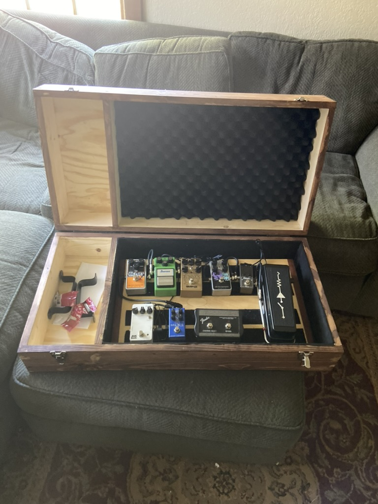
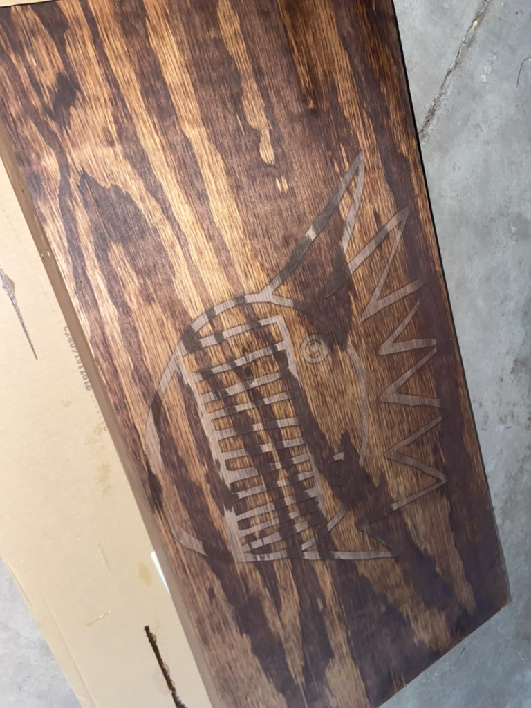
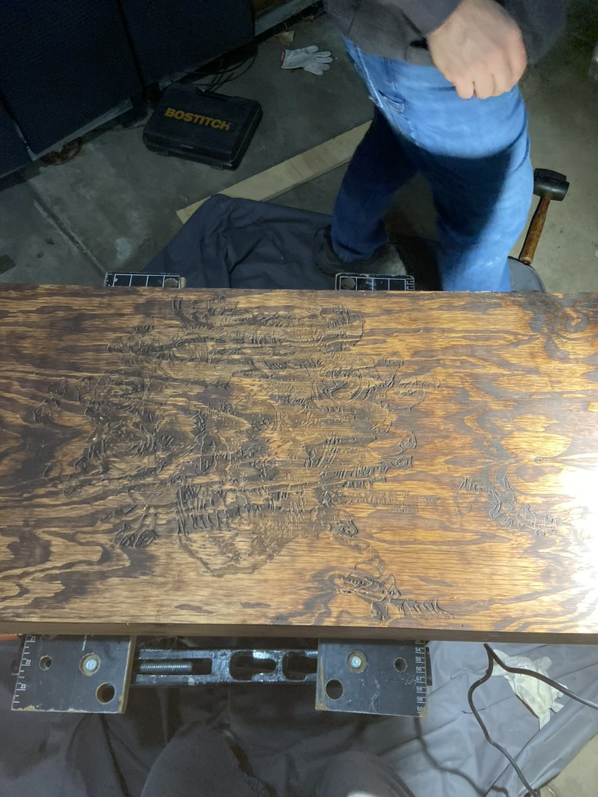
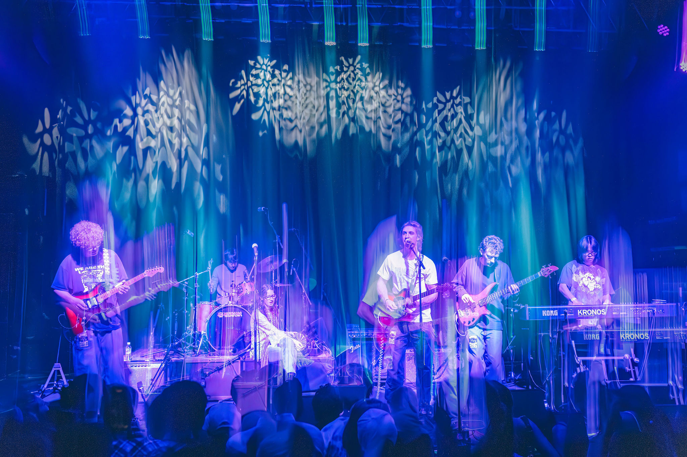
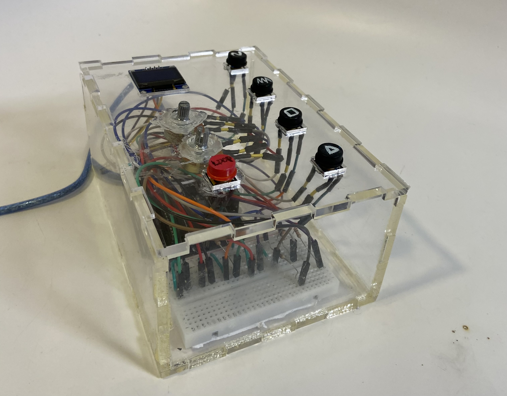

Guitar Pedalboard Case
  This was my first experience woodworking. I 3D modeled and fabricated a custom case for my guitar pedalboard, which I also built. Each lid has a laser cut engraving, the top having Bertha, a character of the Grateful Dead, and the top having the Boognish, the demon-god whose the patron saint of one of the greatest bands ever, Ween.
Sketchwork Live at the Fox Theater - Audio Engineering Project
When my band played at The Fox, I recieved the raw multitrack recordings, and on my own time, mixed, mastered, and produced our tracks. Check it out on our Soundcloud!
"Home Grown" The Future of in Home Plant Watering

"Home Grown" is a customer-friendly, easy-to-use vertical gardening system, that utilizes tiered filtration and watering systems, Arduino-powered water moisture detectors, and water pumps, all powered by external solar panels. "Home Grown" aids in water recycling and reduces water waste due to plant overwatering. This was my first major project in my college, in my Freshman Engineering Projects course. This was completed in a team of four other students, given the prompt: solve a section of the water crisis.
Fixed Architecture Synthesizer
Given ~two weeks, we were tasked with making "something cool" using Python. Considering my group's prior experience with Arduino and general interest in music, we designed a fixed-architecture synthesizer using Python and Arduino. Due to the rubric constraint to specifically program our project in Python, we learned about converting code libraries [Arduino IDE -> Python]. I designed an enclosure in Rhino and laser-cut acrylic sheets to create a practical enclosure. Python Libraries Used: PYO, Mingus, Arduino Sketch // Keyboard, PySerial